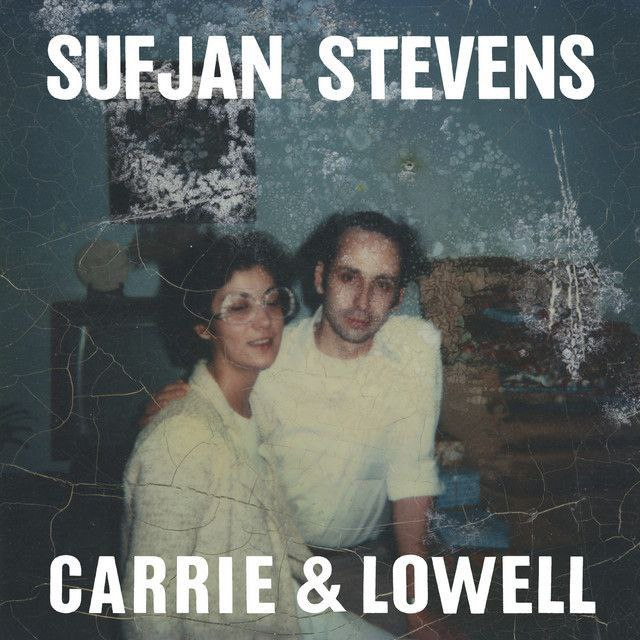

I enjoy listening to music and podcast since it gives me a medium to communicate my emotions.
Both of them has played an important role in my life.
I listen to it when I'm happy, upset, feeling myself, or just want to pass the time.
I've also discovered music and podcast that remind me of something that happened in the past.
I love making playlist, it brings so much comfort.
These are a few of my current favourites.
|
Vampire - Olivia Rodrigo |
Runtuh - Feby Putri, |
Running Away - Mark Tuan |
|
Lowkey - Niki |
 Fourth of July - Sufjan |
 Red - The Rose |
This is my favorite podcast. This podcast talks
about life which is about faith, our future, our regret,
how to be a better person and more.
This podcast comes out every Sunday on Youtube and Spotify,
and they will take a break when they want to release a new season.
There are currently three seasons
Borak Space - Hakim Parker,
Harith Zazman